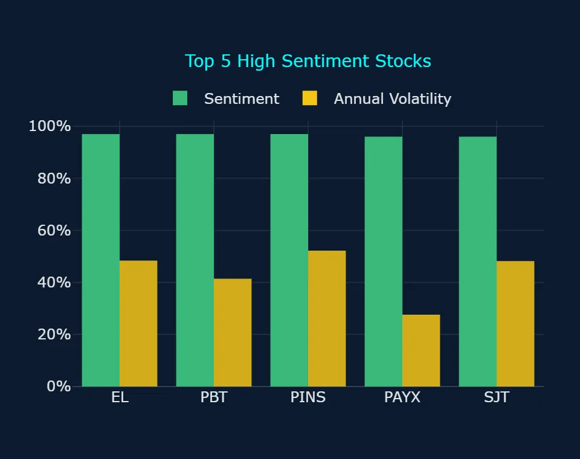
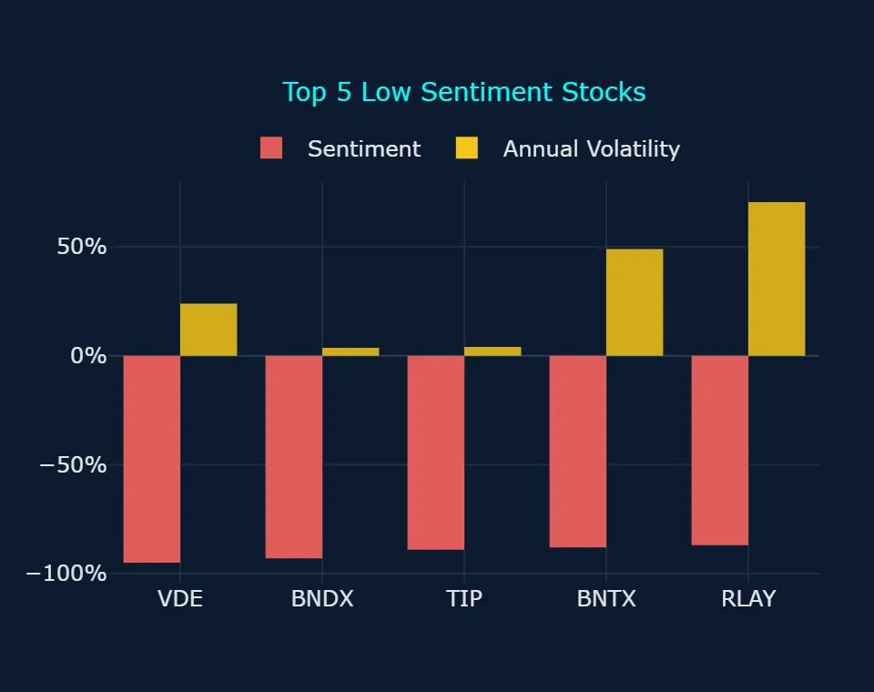
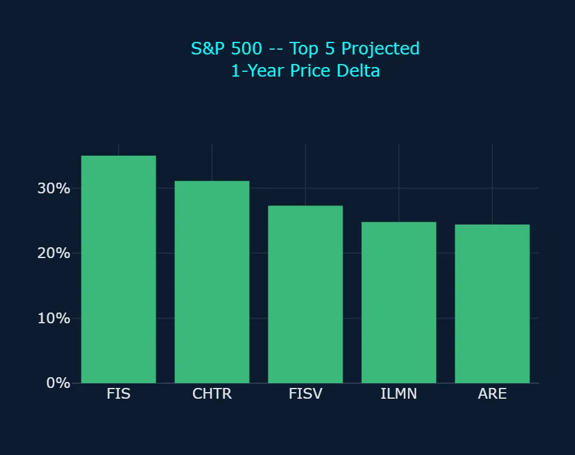
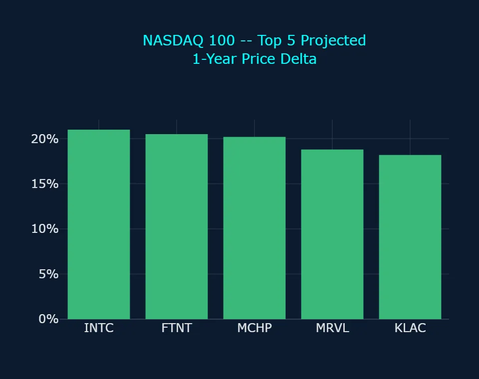
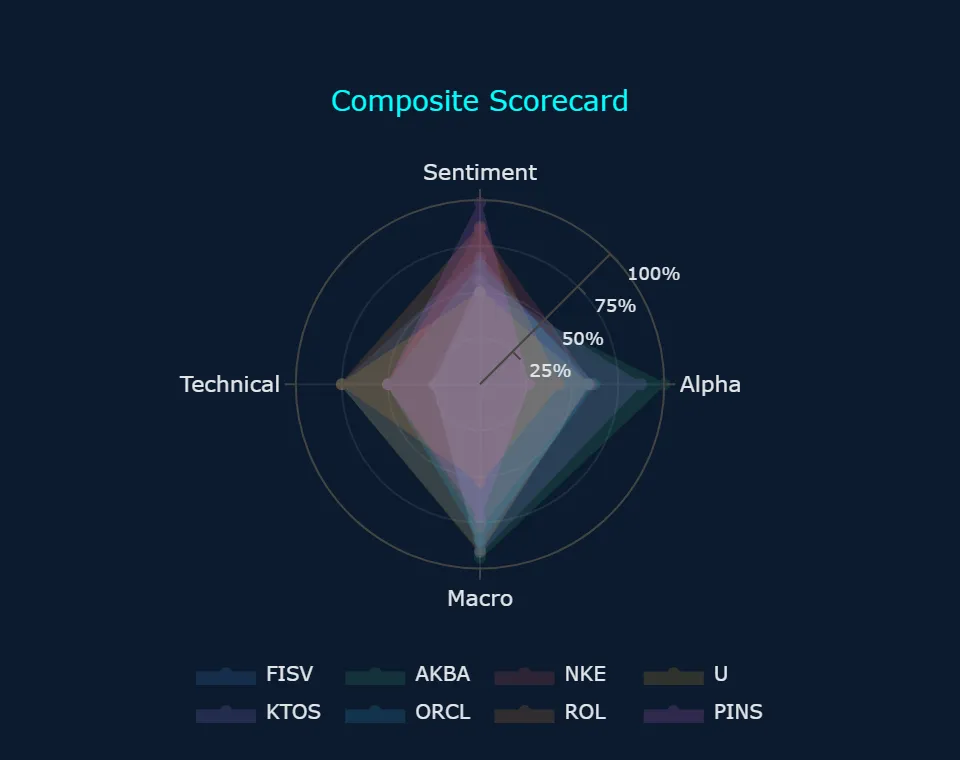
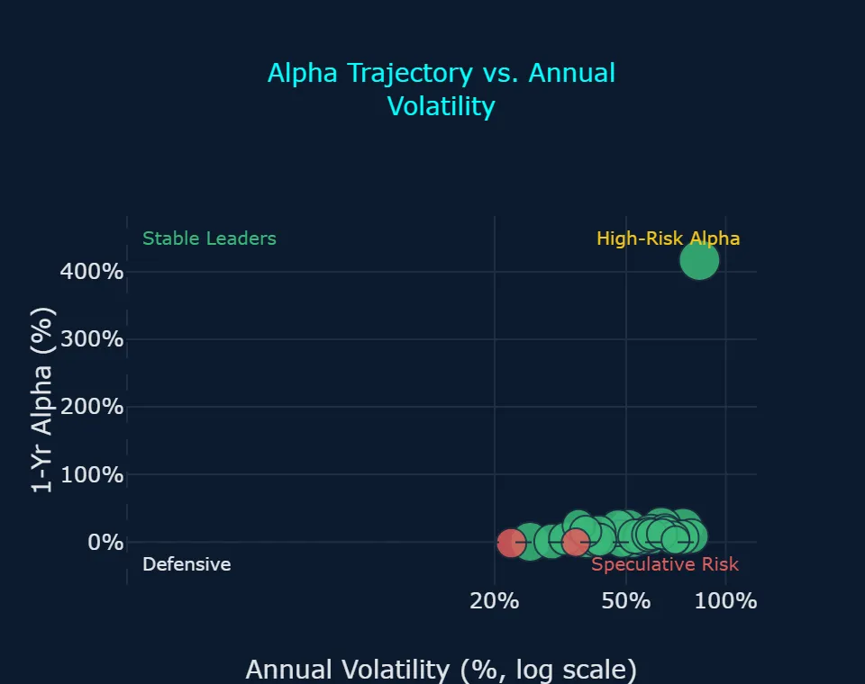
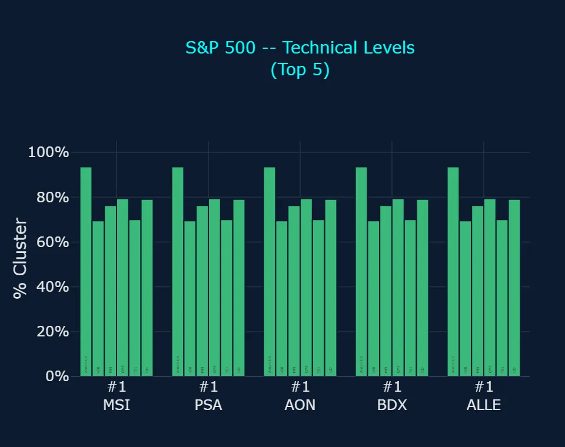
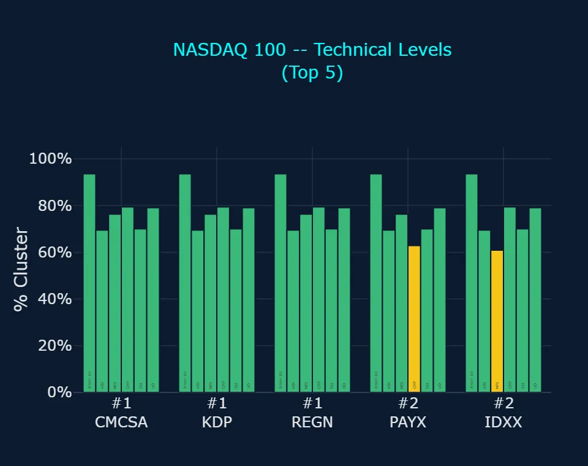
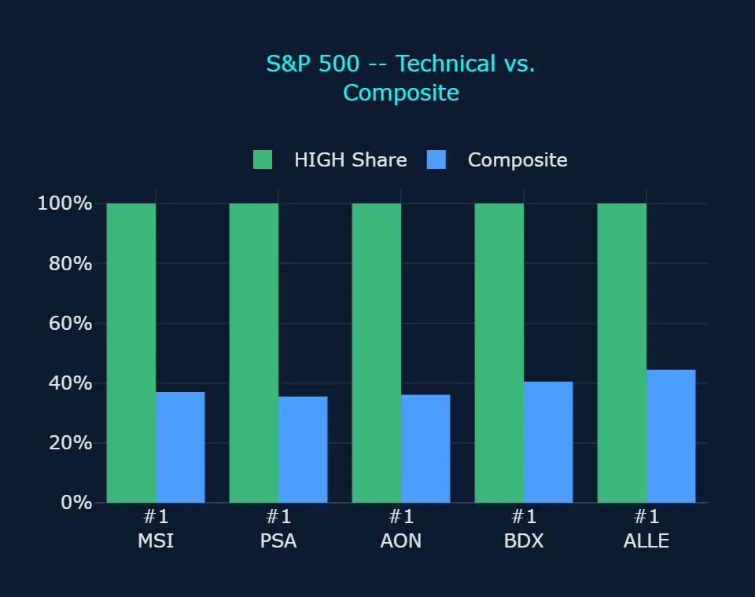
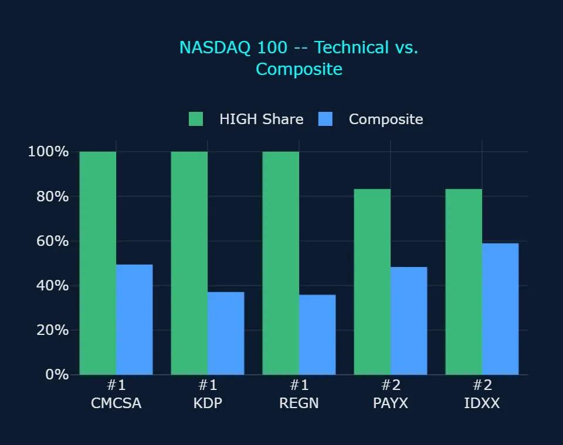

Zoonova AI: Pre-Market Quantitative Briefing – November 6, 2026
Session Quantitative Briefing: The Zoonova AI Intelligence Engine executes a hybrid architecture combining a proprietary Quad-Ensemble machine learning framework with Google Gemini Flash for real-time contextual synthesis and semantic macroeconomic grounding. The quantitative pipeline integrates four specialized estimators: Random Forest Regressor (RFR) for baseline structural stability, eXtreme Gradient Boosting (XGB) optimized for residual loss minimization, Categorical Boosting (CAT) for high-cardinality categorical signal processing, and Temporal Fusion Transformer (TFT) for multi-horizon price and volatility forecasting.
Zoonova AI: Pre-Market Momentum & Liquidity Report
1. QUANTITATIVE MODEL OVERVIEW & SIGNAL METRICS
Zoonova's predictive architecture integrates the Quad-Ensemble (Random Forest Regressor [RFR], eXtreme Gradient Boosting [XGB], Categorical Boosting [CAT], and Temporal Fusion Transformer [TFT]) for price targets and alpha probability forecasting. Sentiment scoring is generated via VADER text analysis across real-time media streams, while BIRCH clustering drives anomaly detection and systemic macro breadth modeling. Together, these frameworks evaluate market breadth, structural price shifts, and risk dispersion across the monitored universe as of 2026-11-05.
- SPDR S&P 500 ETF Trust (SPY) closed at $733.00 on 2026-11-05 with a sentiment of +82.0% and an annualized volatility of 16.79%, while the Quad-Ensemble projects a 1-year target of $809.69 (+10.5% implied gain), despite registering both short-term (3d) and long-term (1w) bearish trend anomalies (Zoonova, 2026-11-05).
- Invesco QQQ Trust Series 1 (QQQ) closed at $647.05 with +82.0% sentiment and an annualized volatility of 22.45%, projecting a 1-year target of $703.36 (+8.7% implied gain) alongside a 37.41% probability of 1-year alpha exceeding +10%, but displaying an implied 1-year excess alpha of -1.76% and dual bearish trend anomalies (Zoonova, 2026-11-05).
- SPDR Dow Jones Industrial Average ETF (DIA) closed at $514.27 (+82.0% sentiment, 15.13% annualized volatility) with a projected 1-year price of $546.70 (+6.3% implied gain) and a short-term (3d) bearish trend anomaly, while Vanguard Total Bond Market ETF (BND) closed at $71.65 (+30.0% sentiment, 4.42% annualized volatility) targeting $76.99 (+7.5% implied gain) (Zoonova, 2026-11-05).
- SPDR Gold Shares ETF (GLD) closed at $375.49 with a sentiment of +38.0% and an annualized volatility of 24.69%, projecting a 1-year target of $397.70 (+5.9% implied gain) alongside a 7.23% probability of clearing +10% excess alpha (Zoonova, 2026-11-05).
- BIRCH clustering registered pervasive bearish breadth across the monitored universe, flagging moderate severity bearish anomalies across 92 names: 66 stocks, 26 ETFs, and low severity bearish anomalies across 105 names: 74 stocks, 31 ETFs, contrasted against only 1 stock with moderate bullish anomalies and 15 stocks with low bullish anomalies (Zoonova, 2026-11-05).
2. SENTIMENT INSIGHTS – TOP 5 HIGH & LOW
Top 5 High Sentiment Stocks
| Ticker | Company Name | Sentiment Score | Primary Catalyst / Driver |
|---|---|---|---|
| EL | Estee Lauder Cos., Inc. | +97.0% | Sentiment was bolstered as Estee Lauder raised its fiscal 2027 outlook and established fiscal 2030 targets projecting operating margins of up to 18.5% under its Beauty Reimagined restructuring program (Global Cosmetics News, 2026-11-05). |
| PBT | Permian Basin Royalty Trust | +97.0% | Sentiment surged after the trust declared an increased October cash distribution of $0.045191 per unit and scheduled a special meeting for November 23, 2026, to vote on a proposed business combination with SoftVest (PR Newswire, 2026-10-23). |
| PINS | Pinterest Inc | +97.0% | Investor enthusiasm was supported by Pinterest unlocking premium ad inventory for programmatic buyers and expanding its user base to a record 661 million monthly active users (TradingView, 2026-10-30). |
| PAYX | Paychex Inc. | +96.0% | Sentiment is anchored by steady small business hiring metrics reported in the October Paychex Employment Watch alongside shareholder returns underpinned by a $1.19 per share quarterly dividend (Paychex, 2026-11-03). |
| SJT | San Juan Basin Royalty Trust | +96.0% | Sentiment remained positive as the trust reported a gross reduction of $130,448 in its cumulative excess production cost deficit to $12.42 million, signaling progress toward replenishing reserve thresholds (PR Newswire, 2026-10-20). |
Top 5 Low Sentiment Stocks
| Ticker | Company Name | Sentiment Score | Primary Friction / Risk Factor |
|---|---|---|---|
| VDE* | Vanguard Energy ETF | -95.0% | Vanguard Energy ETF (VDE) sentiment is weighed down by volatility in crude benchmark pricing and market-wide rotation away from fossil fuel energy producers (TipRanks, 2026-11-06). |
| BNDX* | Vanguard Total International Bond ETF | -93.0% | Vanguard Total International Bond ETF (BNDX) sentiment is dampened by foreign exchange fluctuations and duration sensitivity across volatile non-U.S. sovereign debt yields (The Motley Fool, 2026-11-06). |
| TIP* | iShares TIPS Bond ETF | -89.0% | iShares TIPS Bond ETF (TIP) sentiment is constrained as moderating inflation expectations reduce the relative appeal of Treasury inflation-protected securities against elevated nominal yields (The Motley Fool, 2026-11-04). |
| BNTX | BioNTech SE | -88.0% | BioNTech SE sentiment is depressed by a 35% year-over-year contraction in COVID-19 vaccine demand and expanding clinical expenditures across its oncology pipeline (The Pharmaletter, 2026-11-03). |
| RLAY | Relay Therapeutics Inc | -87.0% | Relay Therapeutics faces negative sentiment following a third-quarter net loss of $81.7 million driven by clinical trial spending and zero commercial product revenue (TradingView, 2026-11-04). |
* ETF (exchange-traded fund)
3. ALPHA PROBABILITY & PRICE DELTA LEADERBOARD – 1-YEAR HORIZON
S&P 500 – Top 5 High Alpha Probability (1yr)
| Ticker | Current Price ($) | 1-Yr Target Price ($) | Alpha Probability (%) | Implied Excess Alpha (%) | 10%+ Alpha? |
|---|---|---|---|---|---|
| ORCL | $115.16 | $139.91 | 59.76% | 11.02% | Both Yes |
| NKE | $39.56 | $46.25 | 58.47% | 6.43% | Split |
| BSX | $44.64 | $51.52 | 56.55% | 4.96% | Split |
| FISV | $62.74 | $79.86 | 56.42% | 16.83% | Both Yes |
| CPRT | $32.48 | $36.10 | 54.80% | 0.68% | Split |
S&P 500 – Top 5 Price Delta + % Change (1yr)
| Ticker | Current Price ($) | 1-Yr Target Price ($) | Absolute Delta ($) | Projected 1-Yr % Change (%) | Implied Excess Alpha (%) |
|---|---|---|---|---|---|
| FIS | $29.39 | $39.68 | $10.29 | 35.01% | 24.54% |
| CHTR | $125.86 | $165.06 | $39.20 | 31.15% | 20.69% |
| FISV | $62.74 | $79.86 | $17.12 | 27.29% | 16.83% |
| ILMN | $208.00 | $259.63 | $51.63 | 24.82% | 14.36% |
| ARE | $45.17 | $56.19 | $11.02 | 24.40% | 13.94% |
NASDAQ 100 – Top 5 High Alpha Probability (1yr)
| Ticker | Current Price ($) | 1-Yr Target Price ($) | Alpha Probability (%) | Implied Excess Alpha (%) | 10%+ Alpha? |
|---|---|---|---|---|---|
| CPRT | $32.48 | $36.10 | 54.80% | 0.68% | Split |
| MU | $656.39 | $770.21 | 51.54% | 6.88% | Split |
| PYPL | $58.96 | $67.22 | 33.71% | 3.55% | Both No |
| MRVL | $133.55 | $158.62 | 33.26% | 8.31% | Both No |
| MELI | $1,530.28 | $1,735.82 | 27.48% | 2.97% | Both No |
NASDAQ 100 – Top 5 Price Delta + % Change (1yr)
| Ticker | Current Price ($) | 1-Yr Target Price ($) | Absolute Delta ($) | Projected 1-Yr % Change (%) | Implied Excess Alpha (%) |
|---|---|---|---|---|---|
| INTC | $52.25 | $63.24 | $10.99 | 21.03% | 10.56% |
| FTNT | $122.51 | $147.63 | $25.12 | 20.50% | 10.04% |
| MCHP | $64.85 | $77.92 | $13.07 | 20.15% | 9.69% |
| MRVL | $133.55 | $158.62 | $25.07 | 18.77% | 8.31% |
| KLAC | $129.80 | $153.39 | $23.59 | 18.17% | 7.71% |
4. REAL-TIME CONTEXTUAL ENRICHMENT
Macroeconomic sentiment remains balanced between resilient domestic economic activity and persistent interest rate headwinds. The Federal Reserve maintained the target range for the federal funds rate at 3.75% to 4.00% at its October 2026 policy meeting (Federal Reserve, 2026-10-28), citing resilient consumer spending alongside an inflation print of 3.7% that continues to run above the central bank's 2.0% objective (J.P. Morgan Global Research, 2026-11-03). While headline benchmark sentiment remains elevated at +82.0% across SPDR S&P 500 ETF Trust (SPY), Invesco QQQ Trust Series 1 (QQQ), and SPDR Dow Jones Industrial Average ETF (DIA), BIRCH clustering registered extensive underlying fragility, flagging moderate severity bearish trend anomalies across 92 names: 66 stocks, 26 ETFs, and low severity bearish anomalies across 105 names: 74 stocks, 31 ETFs (Zoonova, 2026-11-05). This pronounced dispersion confirms that broader equity market breadth has deteriorated even as top-line capitalization weights preserve nominal index levels.
Idiosyncratic corporate earnings and structural guidance events are driving sharp performance divergences among high alpha probability candidates. On the Main Scorecard, Fiserv, Inc. (FISV) holds the leading Composite score of 71.4, where both models expect it to beat the benchmark by 10%+ (Alpha Rating 58.2, Sentiment Rating 69.0, Technical Signal 75.0, Macro Alignment 89.6), reinforced by a 56.42% probability of achieving +10% 1-year alpha and an implied 1-year excess alpha of +16.83% (Zoonova, 2026-11-05). This quantitative profile was validated by Fiserv's Q3 2026 financial report, which delivered adjusted EPS of $1.75 and doubled its Project Elevate cost-efficiency target to $1 billion (Markets Insider, 2026-11-03). In contrast, Oracle Corp. (ORCL), which shows a 59.76% probability of 1-year alpha exceeding +10% and +11.02% implied excess alpha (both models expect 10%+ outperformance, Composite 64.2 on the Main Scorecard), faced immediate headwinds as reports confirmed Microsoft is winding down its AI cloud compute leasing contract (Investing.com, 2026-11-06; Zoonova, 2026-11-05). For names like Copart, Inc. (CPRT, 54.80% alpha probability) and Micron Technology Inc. (MU, 51.54% alpha probability), the two models split, as elevated probability estimates diverge from lower implied alphas (+0.68% and +6.88%, respectively) (Zoonova, 2026-11-05).
In the technology mega-cap landscape, structural spending fatigue and capacity reallocation have cooled market-leading momentum. On the Tech Stock Scorecard, major bellwethers including Advanced Micro Devices Inc. (AMD, Composite 41.0), Intel Corp. (INTC, Composite 40.8), NVIDIA Corp (NVDA, Composite 34.7), Tesla Inc (TSLA, Composite 24.1), and Broadcom Inc (AVGO, Composite 21.1) have all registered dual short-term (3d) and long-term (1w) bearish trend anomalies (Zoonova, 2026-11-05). Furthermore, neither model expects 10%+ benchmark outperformance across NVDA, TSLA, and AVGO, as market participants re-examine the returns on hyperscale artificial intelligence capital deployment following contract terminations and funding reviews (TradingKey, 2026-11-06; Zoonova, 2026-11-05). This systematic retrenchment in technology momentum reinforces the BIRCH anomaly clustering and supports defensive rotation into cash-flow-generative consumer, infrastructure, and restructuring franchises.
5. ANOMALY DETECTION SCANNER
Direction: Bearish
Moderate Severity (92 names: 66 stocks, 26 ETFs)
- ACWI* – iShares MSCI ACWI ETF: Bearish Short-Term (3d) Trend Anomaly, Bearish Long-Term (1w) Trend Anomaly
- ADI – Analog Devices Inc.: Bearish Short-Term (3d) Trend Anomaly, Bearish Long-Term (1w) Trend Anomaly
- AKAM – Akamai Technologies Inc: Bearish Short-Term (3d) Trend Anomaly, Bearish Long-Term (1w) Trend Anomaly
- AMAT – Applied Materials Inc.: Bearish Short-Term (3d) Trend Anomaly, Bearish Long-Term (1w) Trend Anomaly
- AMD – Advanced Micro Devices Inc.: Bearish Short-Term (3d) Trend Anomaly, Bearish Long-Term (1w) Trend Anomaly
- AME – Ametek Inc: Bearish Short-Term (3d) Trend Anomaly, Bearish Long-Term (1w) Trend Anomaly
- ANET – Arista Networks Inc: Bearish Short-Term (3d) Trend Anomaly, Bearish Long-Term (1w) Trend Anomaly
- APH – Amphenol Corp.: Bearish Short-Term (3d) Trend Anomaly, Bearish Long-Term (1w) Trend Anomaly
- ARKG* – ARK Genomic Revolution ETF: Bearish Short-Term (3d) Trend Anomaly, Bearish Long-Term (1w) Trend Anomaly
- ARKQ* – ARK Autonomous Technology & Robotics ETF: Bearish Short-Term (3d) Trend Anomaly, Bearish Long-Term (1w) Trend Anomaly
- ARQT – Arcutis Biotherapeutics Inc: Bearish Short-Term (3d) Trend Anomaly, Bearish Long-Term (1w) Trend Anomaly
- ASML – ASML Holding NV: Bearish Short-Term (3d) Trend Anomaly, Bearish Long-Term (1w) Trend Anomaly
- AVGO – Broadcom Inc: Bearish Short-Term (3d) Trend Anomaly, Bearish Long-Term (1w) Trend Anomaly
- BKR – Baker Hughes Co: Bearish Short-Term (3d) Trend Anomaly, Bearish Long-Term (1w) Trend Anomaly
- CAT – Caterpillar Inc.: Bearish Short-Term (3d) Trend Anomaly, Bearish Long-Term (1w) Trend Anomaly
- CMI – Cummins Inc.: Bearish Short-Term (3d) Trend Anomaly, Bearish Long-Term (1w) Trend Anomaly
- CRWD – Crowdstrike Holdings Inc: Bearish Short-Term (3d) Trend Anomaly, Bearish Long-Term (1w) Trend Anomaly
- CSCO – Cisco Systems, Inc.: Bearish Short-Term (3d) Trend Anomaly, Bearish Long-Term (1w) Trend Anomaly
- DDOG – Datadog Inc: Bearish Short-Term (3d) Trend Anomaly, Bearish Long-Term (1w) Trend Anomaly
- EEM* – iShares MSCI Emerging Markets ETF: Bearish Short-Term (3d) Trend Anomaly, Bearish Long-Term (1w) Trend Anomaly
- ESGU* – iShares Trust iShares ESG Aware MSCI USA ETF: Bearish Short-Term (3d) Trend Anomaly, Bearish Long-Term (1w) Trend Anomaly
- ESLT – Elbit Systems Ltd.: Bearish Short-Term (3d) Trend Anomaly, Bearish Long-Term (1w) Trend Anomaly
- ETN – Eaton Corporation plc: Bearish Short-Term (3d) Trend Anomaly, Bearish Long-Term (1w) Trend Anomaly
- FFIV – F5 Inc: Bearish Short-Term (3d) Trend Anomaly, Bearish Long-Term (1w) Trend Anomaly
- FTNT – Fortinet Inc: Bearish Short-Term (3d) Trend Anomaly, Bearish Long-Term (1w) Trend Anomaly
- GH – Guardant Health Inc: Bearish Short-Term (3d) Trend Anomaly, Bearish Long-Term (1w) Trend Anomaly
- GLW – Corning, Inc.: Bearish Short-Term (3d) Trend Anomaly, Bearish Long-Term (1w) Trend Anomaly
- HII – Huntington Ingalls Industries Inc: Bearish Short-Term (3d) Trend Anomaly, Bearish Long-Term (1w) Trend Anomaly
- HPE – Hewlett Packard Enterprise Co: Bearish Short-Term (3d) Trend Anomaly, Bearish Long-Term (1w) Trend Anomaly
- IEMG* – iShares Core MSCI Emerging Markets ETF: Bearish Short-Term (3d) Trend Anomaly, Bearish Long-Term (1w) Trend Anomaly
- ILMN – Illumina Inc: Bearish Short-Term (3d) Trend Anomaly, Bearish Long-Term (1w) Trend Anomaly
- INTC – Intel Corp.: Bearish Short-Term (3d) Trend Anomaly, Bearish Long-Term (1w) Trend Anomaly
- IRM – Iron Mountain Inc.: Bearish Short-Term (3d) Trend Anomaly, Bearish Long-Term (1w) Trend Anomaly
- ITOT* – iShares Core S&P Total U.S. Stock Market ETF: Bearish Short-Term (3d) Trend Anomaly, Bearish Long-Term (1w) Trend Anomaly
- IVV* – iShares Core S&P 500 ETF: Bearish Short-Term (3d) Trend Anomaly, Bearish Long-Term (1w) Trend Anomaly
- IVW* – iShares S&P 500 Growth ETF: Bearish Short-Term (3d) Trend Anomaly, Bearish Long-Term (1w) Trend Anomaly
- IWB* – iShares Russell 1000 ETF: Bearish Short-Term (3d) Trend Anomaly, Bearish Long-Term (1w) Trend Anomaly
- IWF* – iShares Russell 1000 Growth ETF: Bearish Short-Term (3d) Trend Anomaly, Bearish Long-Term (1w) Trend Anomaly
- IWP* – iShares Russell Mid-Cap Growth ETF: Bearish Short-Term (3d) Trend Anomaly, Bearish Long-Term (1w) Trend Anomaly
- JCI – Johnson Controls International plc: Bearish Short-Term (3d) Trend Anomaly, Bearish Long-Term (1w) Trend Anomaly
- KEX – Kirby Corp.: Bearish Short-Term (3d) Trend Anomaly, Bearish Long-Term (1w) Trend Anomaly
- KEYS – Keysight Technologies Inc: Bearish Short-Term (3d) Trend Anomaly, Bearish Long-Term (1w) Trend Anomaly
- KLAC – KLA Corp.: Bearish Short-Term (3d) Trend Anomaly, Bearish Long-Term (1w) Trend Anomaly
- KMI – Kinder Morgan Inc: Bearish Short-Term (3d) Trend Anomaly, Bearish Long-Term (1w) Trend Anomaly
- KOD – Kodiak Sciences Inc: Bearish Short-Term (3d) Trend Anomaly, Bearish Long-Term (1w) Trend Anomaly
- LRCX – Lam Research Corp.: Bearish Short-Term (3d) Trend Anomaly, Bearish Long-Term (1w) Trend Anomaly
- MCHP – Microchip Technology, Inc.: Bearish Short-Term (3d) Trend Anomaly, Bearish Long-Term (1w) Trend Anomaly
- MPC – Marathon Petroleum Corp: Bearish Short-Term (3d) Trend Anomaly, Bearish Long-Term (1w) Trend Anomaly
- MRVL – Marvell Technology Inc: Bearish Short-Term (3d) Trend Anomaly, Bearish Long-Term (1w) Trend Anomaly
- MU – Micron Technology Inc.: Bearish Short-Term (3d) Trend Anomaly, Bearish Long-Term (1w) Trend Anomaly
- NET – Cloudflare Inc: Bearish Short-Term (3d) Trend Anomaly, Bearish Long-Term (1w) Trend Anomaly
- NTAP – Netapp Inc: Bearish Short-Term (3d) Trend Anomaly, Bearish Long-Term (1w) Trend Anomaly
- NTRA – Natera Inc: Bearish Short-Term (3d) Trend Anomaly, Bearish Long-Term (1w) Trend Anomaly
- NUE – Nucor Corp.: Bearish Short-Term (3d) Trend Anomaly, Bearish Long-Term (1w) Trend Anomaly
- NVDA – NVIDIA Corp: Bearish Short-Term (3d) Trend Anomaly, Bearish Long-Term (1w) Trend Anomaly
- NWS – News Corp: Bearish Short-Term (3d) Trend Anomaly, Bearish Long-Term (1w) Trend Anomaly
- NWSA – News Corp: Bearish Short-Term (3d) Trend Anomaly, Bearish Long-Term (1w) Trend Anomaly
- OKTA – Okta Inc: Bearish Short-Term (3d) Trend Anomaly, Bearish Long-Term (1w) Trend Anomaly
- PANW – Palo Alto Networks Inc: Bearish Short-Term (3d) Trend Anomaly, Bearish Long-Term (1w) Trend Anomaly
- PGEN – Precigen Inc: Bearish Short-Term (3d) Trend Anomaly, Bearish Long-Term (1w) Trend Anomaly
- PLTR – Palantir Technologies Inc: Bearish Short-Term (3d) Trend Anomaly, Bearish Long-Term (1w) Trend Anomaly
- PSX – Phillips 66: Bearish Short-Term (3d) Trend Anomaly, Bearish Long-Term (1w) Trend Anomaly
- PWR – Quanta Services, Inc.: Bearish Short-Term (3d) Trend Anomaly, Bearish Long-Term (1w) Trend Anomaly
- QQQ* – Invesco QQQ Trust Series 1: Bearish Short-Term (3d) Trend Anomaly, Bearish Long-Term (1w) Trend Anomaly
- ROK – Rockwell Automation Inc: Bearish Short-Term (3d) Trend Anomaly, Bearish Long-Term (1w) Trend Anomaly
- RVMD – Revolution Medicines Inc: Bearish Short-Term (3d) Trend Anomaly, Bearish Long-Term (1w) Trend Anomaly
- SCHB* – Schwab U.S. Broad Market ETF: Bearish Short-Term (3d) Trend Anomaly, Bearish Long-Term (1w) Trend Anomaly
- SCHG* – Schwab U.S. Large-Cap Growth ETF: Bearish Short-Term (3d) Trend Anomaly, Bearish Long-Term (1w) Trend Anomaly
- SCHX* – Schwab U.S. Large-Cap ETF: Bearish Short-Term (3d) Trend Anomaly, Bearish Long-Term (1w) Trend Anomaly
- SPY* – SPDR S&P 500 ETF Trust: Bearish Short-Term (3d) Trend Anomaly, Bearish Long-Term (1w) Trend Anomaly
- SPYG* – State Street SPDR Portfolio S&P 500 Growth ETF: Bearish Short-Term (3d) Trend Anomaly, Bearish Long-Term (1w) Trend Anomaly
- STX – Seagate Technology Holdings Plc: Bearish Short-Term (3d) Trend Anomaly, Bearish Long-Term (1w) Trend Anomaly
- TDY – Teledyne Technologies Inc: Bearish Short-Term (3d) Trend Anomaly, Bearish Long-Term (1w) Trend Anomaly
- TER – Teradyne, Inc.: Bearish Short-Term (3d) Trend Anomaly, Bearish Long-Term (1w) Trend Anomaly
- TSLA – Tesla Inc: Bearish Short-Term (3d) Trend Anomaly, Bearish Long-Term (1w) Trend Anomaly
- TWST – Twist Bioscience Corp: Bearish Short-Term (3d) Trend Anomaly, Bearish Long-Term (1w) Trend Anomaly
- TXG – 10x Genomics Inc: Bearish Short-Term (3d) Trend Anomaly, Bearish Long-Term (1w) Trend Anomaly
- TXN – Texas Instruments Inc.: Bearish Short-Term (3d) Trend Anomaly, Bearish Long-Term (1w) Trend Anomaly
- URGN – UroGen Pharma Ltd: Bearish Short-Term (3d) Trend Anomaly, Bearish Long-Term (1w) Trend Anomaly
- URI – United Rentals, Inc.: Bearish Short-Term (3d) Trend Anomaly, Bearish Long-Term (1w) Trend Anomaly
- VCYT – Veracyte Inc: Bearish Short-Term (3d) Trend Anomaly, Bearish Long-Term (1w) Trend Anomaly
- VGT* – Vanguard Information Technology ETF: Bearish Short-Term (3d) Trend Anomaly, Bearish Long-Term (1w) Trend Anomaly
- VLO – Valero Energy Corp.: Bearish Short-Term (3d) Trend Anomaly, Bearish Long-Term (1w) Trend Anomaly
- VLUE* – iShares MSCI USA Value Factor ETF: Bearish Short-Term (3d) Trend Anomaly, Bearish Long-Term (1w) Trend Anomaly
- VOO* – Vanguard S&P 500 ETF: Bearish Short-Term (3d) Trend Anomaly, Bearish Long-Term (1w) Trend Anomaly
- VT* – Vanguard Total World Stock ETF: Bearish Short-Term (3d) Trend Anomaly, Bearish Long-Term (1w) Trend Anomaly
- VTI* – Vanguard Total Stock Market ETF: Bearish Short-Term (3d) Trend Anomaly, Bearish Long-Term (1w) Trend Anomaly
- VUG* – Vanguard Growth ETF: Bearish Short-Term (3d) Trend Anomaly, Bearish Long-Term (1w) Trend Anomaly
- VV* – Vanguard Large Cap ETF: Bearish Short-Term (3d) Trend Anomaly, Bearish Long-Term (1w) Trend Anomaly
- WDC – Western Digital Corp.: Bearish Short-Term (3d) Trend Anomaly, Bearish Long-Term (1w) Trend Anomaly
- WMB – Williams Cos Inc: Bearish Short-Term (3d) Trend Anomaly, Bearish Long-Term (1w) Trend Anomaly
- XLK* – Technology Select Sector SPDR ETF: Bearish Short-Term (3d) Trend Anomaly, Bearish Long-Term (1w) Trend Anomaly
Low Severity (105 names: 74 stocks, 31 ETFs)
- ABUS – Arbutus Biopharma Corp: Bearish Short-Term (3d) Trend Anomaly
- AKBA – Akebia Therapeutics Inc.: Bearish Short-Term (3d) Trend Anomaly
- AMCR – Amcor Plc: Bearish Short-Term (3d) Trend Anomaly
- ARGX – Argen X SE: Bearish Short-Term (3d) Trend Anomaly
- ARKK* – ARK Innovation ETF: Bearish Short-Term (3d) Trend Anomaly
- ARKW* – ARK Next Generation Internet ETF: Bearish Short-Term (3d) Trend Anomaly
- BBIO – BridgeBio Pharma Inc: Bearish Short-Term (3d) Trend Anomaly
- BEN – Franklin Resources, Inc.: Bearish Short-Term (3d) Trend Anomaly
- BRKR – Bruker Corp: Bearish Short-Term (3d) Trend Anomaly
- C – Citigroup Inc: Bearish Short-Term (3d) Trend Anomaly
- CDW – CDW Corp: Bearish Short-Term (3d) Trend Anomaly
- COGT – Cogent Biosciences Inc: Bearish Short-Term (3d) Trend Anomaly
- CRL – Charles River Laboratories International Inc.: Bearish Long-Term (1w) Trend Anomaly
- CVS – CVS Health Corp: Bearish Long-Term (1w) Trend Anomaly
- CYTK – Cytokinetics Inc: Bearish Short-Term (3d) Trend Anomaly
- DD – DuPont de Nemours Inc: Bearish Short-Term (3d) Trend Anomaly
- DDD – 3D Systems Corp.: Bearish Short-Term (3d) Trend Anomaly
- DIA* – SPDR Dow Jones Industrial Average ETF: Bearish Short-Term (3d) Trend Anomaly
- DLR – Digital Realty Trust Inc: Bearish Short-Term (3d) Trend Anomaly
- DLTR – Dollar Tree Inc: Bearish Short-Term (3d) Trend Anomaly
- DOV – Dover Corp.: Bearish Short-Term (3d) Trend Anomaly
- DVN – Devon Energy Corp.: Bearish Long-Term (1w) Trend Anomaly
- EFA* – iShares MSCI EAFE ETF: Bearish Short-Term (3d) Trend Anomaly
- EFV* – iShares MSCI EAFE Value ETF: Bearish Long-Term (1w) Trend Anomaly
- EQIX – Equinix Inc: Bearish Short-Term (3d) Trend Anomaly
- EXPD – Expeditors International Of Washington, Inc.: Bearish Short-Term (3d) Trend Anomaly
- EXPE – Expedia Group Inc: Bearish Short-Term (3d) Trend Anomaly
- FANG – Diamondback Energy Inc: Bearish Long-Term (1w) Trend Anomaly
- FCX – Freeport-McMoRan Inc: Bearish Short-Term (3d) Trend Anomaly
- FDX – Fedex Corp: Bearish Short-Term (3d) Trend Anomaly
- GE – GE Aerospace: Bearish Short-Term (3d) Trend Anomaly
- GENI – Genius Sports Limited: Bearish Short-Term (3d) Trend Anomaly
- GS – Goldman Sachs Group, Inc.: Bearish Short-Term (3d) Trend Anomaly
- HOOD – Robinhood Markets Inc: Bearish Short-Term (3d) Trend Anomaly
- HWM – Howmet Aerospace Inc: Bearish Short-Term (3d) Trend Anomaly
- IEFA* – iShares Core MSCI EAFE ETF: Bearish Short-Term (3d) Trend Anomaly
- IEX – Idex Corporation: Bearish Short-Term (3d) Trend Anomaly
- IJH* – iShares Core S&P Mid-Cap ETF: Bearish Short-Term (3d) Trend Anomaly
- IJR* – iShares Core S&P Small-Cap ETF: Bearish Short-Term (3d) Trend Anomaly
- INCY – Incyte Corp.: Bearish Short-Term (3d) Trend Anomaly
- IVZ – Invesco Ltd: Bearish Short-Term (3d) Trend Anomaly
- IWM* – iShares Russell 2000 ETF: Bearish Short-Term (3d) Trend Anomaly
- IWN* – iShares Russell 2000 Value ETF: Bearish Short-Term (3d) Trend Anomaly
- IWR* – iShares Russell Mid-Cap ETF: Bearish Short-Term (3d) Trend Anomaly
- IXUS* – iShares Core MSCI Total International Stock ETF: Bearish Short-Term (3d) Trend Anomaly
- J – Jacobs Solutions Inc: Bearish Short-Term (3d) Trend Anomaly
- JPM – JPMorgan Chase & Co.: Bearish Short-Term (3d) Trend Anomaly
- KTOS – Kratos Defense & Security Solutions Inc: Bearish Long-Term (1w) Trend Anomaly
- KURA – Kura Oncology Inc: Bearish Long-Term (1w) Trend Anomaly
- LGND – Ligand Pharmaceuticals, Inc.: Bearish Short-Term (3d) Trend Anomaly
- LMT – Lockheed Martin Corp.: Bearish Long-Term (1w) Trend Anomaly
- MDY* – S&P MidCap 400 ETF: Bearish Short-Term (3d) Trend Anomaly
- MELI – MercadoLibre Inc: Bearish Short-Term (3d) Trend Anomaly
- MLM – Martin Marietta Materials, Inc.: Bearish Short-Term (3d) Trend Anomaly
- MPWR – Monolithic Power System Inc: Bearish Short-Term (3d) Trend Anomaly
- MRNA – Moderna Inc: Bearish Short-Term (3d) Trend Anomaly
- MS – Morgan Stanley: Bearish Short-Term (3d) Trend Anomaly
- MTUM* – iShares MSCI USA Momentum Factor ETF: Bearish Long-Term (1w) Trend Anomaly
- NDSN – Nordson Corp.: Bearish Short-Term (3d) Trend Anomaly
- NRG – NRG Energy Inc.: Bearish Long-Term (1w) Trend Anomaly
- NRIX – Nurix Therapeutics Inc: Bearish Long-Term (1w) Trend Anomaly
- NSC – Norfolk Southern Corp.: Bearish Short-Term (3d) Trend Anomaly
- NTRS – Northern Trust Corp.: Bearish Short-Term (3d) Trend Anomaly
- NXPI – NXP Semiconductors NV: Bearish Short-Term (3d) Trend Anomaly
- OKE – Oneok Inc.: Bearish Long-Term (1w) Trend Anomaly
- OMER – Omeros Corporation: Bearish Short-Term (3d) Trend Anomaly
- ON – ON Semiconductor Corp.: Bearish Short-Term (3d) Trend Anomaly
- OXY – Occidental Petroleum Corp.: Bearish Long-Term (1w) Trend Anomaly
- PTGX – Protagonist Therapeutics Inc: Bearish Short-Term (3d) Trend Anomaly
- QCOM – Qualcomm, Inc.: Bearish Short-Term (3d) Trend Anomaly
- QUAL* – iShares MSCI USA Quality Factor ETF: Bearish Long-Term (1w) Trend Anomaly
- RIGL – Rigel Pharmaceuticals: Bearish Short-Term (3d) Trend Anomaly
- RL – Ralph Lauren Corp: Bearish Short-Term (3d) Trend Anomaly
- ROST – Ross Stores, Inc.: Bearish Short-Term (3d) Trend Anomaly
- RTX – RTX Corp: Bearish Short-Term (3d) Trend Anomaly
- SCCO – Southern Copper Corporation: Bearish Short-Term (3d) Trend Anomaly
- SCHA* – Schwab U.S. Small-Cap ETF: Bearish Short-Term (3d) Trend Anomaly
- SCHF* – Schwab International Equity ETF: Bearish Short-Term (3d) Trend Anomaly
- SHV* – iShares Short Treasury Bond ETF: Bearish Long-Term (1w) Trend Anomaly
- SNDX – Syndax Pharmaceuticals Inc: Bearish Long-Term (1w) Trend Anomaly
- STT – State Street Corp.: Bearish Short-Term (3d) Trend Anomaly
- SUPN – Supernus Pharmaceuticals Inc: Bearish Long-Term (1w) Trend Anomaly
- SYY – Sysco Corp.: Bearish Long-Term (1w) Trend Anomaly
- TEL – TE Connectivity plc: Bearish Short-Term (3d) Trend Anomaly
- TJX – TJX Companies, Inc.: Bearish Short-Term (3d) Trend Anomaly
- TRMB – Trimble Inc: Bearish Long-Term (1w) Trend Anomaly
- TT – Trane Technologies plc: Bearish Short-Term (3d) Trend Anomaly
- TVTX – Travere Therapeutics Inc: Bearish Short-Term (3d) Trend Anomaly
- TWLO – Twilio Inc: Bearish Short-Term (3d) Trend Anomaly
- UTHR – United Therapeutics Corp: Bearish Short-Term (3d) Trend Anomaly
- VB* – Vanguard Small Cap ETF: Bearish Short-Term (3d) Trend Anomaly
- VBK* – Vanguard Small Cap Growth ETF: Bearish Short-Term (3d) Trend Anomaly
- VBR* – Vanguard Small Cap Value ETF: Bearish Short-Term (3d) Trend Anomaly
- VDE* – Vanguard Energy ETF: Bearish Long-Term (1w) Trend Anomaly
- VEA* – Vanguard FTSE Developed Markets ETF: Bearish Short-Term (3d) Trend Anomaly
- VEU* – Vanguard FTSE All-World ex-US ETF: Bearish Short-Term (3d) Trend Anomaly
- VO* – Vanguard Mid-Cap ETF: Bearish Short-Term (3d) Trend Anomaly
- VWO* – Vanguard FTSE Emerging Markets ETF: Bearish Short-Term (3d) Trend Anomaly
- VXF* – Vanguard Extended Market Index ETF: Bearish Short-Term (3d) Trend Anomaly
- VXUS* – Vanguard Total International Stock ETF: Bearish Short-Term (3d) Trend Anomaly
- VYM* – Vanguard High Dividend Yield Indx ETF: Bearish Short-Term (3d) Trend Anomaly
- WAB – Westinghouse Air Brake Technologies Corp: Bearish Short-Term (3d) Trend Anomaly
- XLE* – The Energy Select Sector SPDR Fund: Bearish Long-Term (1w) Trend Anomaly
- XLI* – Industrial Select Sector SPDR: Bearish Short-Term (3d) Trend Anomaly
- XOM – Exxon Mobil Corp.: Bearish Long-Term (1w) Trend Anomaly
Direction: Bullish
Moderate Severity (1 stock)
- TPR – Tapestry Inc: Bullish Short-Term (3d) Trend Anomaly, Bullish Long-Term (1w) Trend Anomaly
Low Severity (15 stocks)
- BKNG – Booking Holdings Inc: Bullish Long-Term (1w) Trend Anomaly
- BR – Broadridge Financial Solutions, Inc.: Bullish Long-Term (1w) Trend Anomaly
- FISV – Fiserv, Inc.: Bullish Long-Term (1w) Trend Anomaly
- HCA – HCA Healthcare Inc: Bullish Long-Term (1w) Trend Anomaly
- IDXX – Idexx Laboratories, Inc.: Bullish Long-Term (1w) Trend Anomaly
- JKHY – Jack Henry & Associates, Inc.: Bullish Long-Term (1w) Trend Anomaly
- MCD – McDonald`s Corp: Bullish Long-Term (1w) Trend Anomaly
- NBIX – Neurocrine Biosciences, Inc.: Bullish Long-Term (1w) Trend Anomaly
- ROL – Rollins, Inc.: Bullish Long-Term (1w) Trend Anomaly
- STE – Steris Plc: Bullish Long-Term (1w) Trend Anomaly
- SYK – Stryker Corp.: Bullish Long-Term (1w) Trend Anomaly
- TTWO – Take-Two Interactive Software, Inc.: Bullish Long-Term (1w) Trend Anomaly
- U – Unity Software Inc: Bullish Short-Term (3d) Trend Anomaly
- UHS – Universal Health Services, Inc.: Bullish Long-Term (1w) Trend Anomaly
- VRSK – Verisk Analytics Inc: Bullish Short-Term (3d) Trend Anomaly
Direction: Mixed
Moderate Severity (1 stock)
- RYTM – Rhythm Pharmaceuticals Inc.: Bearish Short-Term (3d) Trend Anomaly, Bullish Long-Term (1w) Trend Anomaly
* ETF (exchange-traded fund)
6. STRATEGIC INVESTMENT ASSESSMENT
- Prioritize defensive, high-quality franchises with mutual model agreement: Main Scorecard leader Fiserv, Inc. (FISV) provides the most robust risk-reward profile with a universe-leading Composite of 71.4, Macro Alignment of 89.6, and mutual consensus where both models expect it to beat the benchmark by 10%+ (56.42% 1-year alpha probability, +16.83% implied 1-year alpha) (Zoonova, 2026-11-05).
- Underweight mega-cap semiconductor and high-beta tech momentum: BIRCH clustering confirmed dual bearish trend anomalies across bellwethers including NVIDIA Corp (NVDA, Composite 34.7 on the Tech Stock Scorecard), Advanced Micro Devices Inc. (AMD, Composite 41.0), and Invesco QQQ Trust Series 1 (QQQ, Composite 40.1 on the Main Scorecard), where neither model expects 10%+ benchmark outperformance (Zoonova, 2026-11-05).
- Selectively accumulate high-alpha enterprise software dislocations: Oracle Corp. (ORCL, Composite 64.2 on the Main Scorecard, where both models expect 10%+ outperformance supported by a 59.76% alpha probability and +11.02% implied excess alpha) presents long-term value, provided near-term volatility from cloud capacity lease adjustments is managed with structured entry points (Investing.com, 2026-11-06; Zoonova, 2026-11-05).
- Hedge against breadth deterioration and reduce exposure to unprofitable biotechnology: With BIRCH clustering flagging moderate severity bearish anomalies across 92 names (66 stocks, 26 ETFs) and low severity bearish anomalies across 105 names (74 stocks, 31 ETFs), high annualized volatility assets lacking revenue support, such as Relay Therapeutics Inc (RLAY, 70.48% annualized volatility, Sentiment -87.0%), remain vulnerable to continued risk re-pricing in a paused 3.75% to 4.00% interest rate environment (Federal Reserve, 2026-10-28; Zoonova, 2026-11-05).
7. STOCK SCORECARD
Main Scorecard
| Ticker | Composite (%) | Alpha Rating | 10%+ Alpha? | Projected 1-Yr Change (%) | Street Consensus (Upside) | Next Earnings | Sentiment Rating | Technical Signal | Macro Alignment | Anomaly Flag | Catalyst / Risk | Market Cap | EPS Revisions (30d) | Short Interest / DTC | Options Flow | Earnings Surprise (4Q) | Bias |
|---|---|---|---|---|---|---|---|---|---|---|---|---|---|---|---|---|---|
| FISV | 71.4% | 58.2 | Both Yes | +27.3% | Hold (-1.8%) | 2027-02-04 | 69.0 | 75.0 | 89.6 | Bullish (1w) | Merchant Execution Slowdown | $33.0B | Downward (-6.3%) | 5.7% / 4.1 DTC | Bullish (Call Skew) | 2/4 Beats | Bullish |
| AKBA | 67.6% | 100.0 | Both Yes | +420.9% | Buy | 2026-11-09 (in 3d) | 50.0 | 25.0 | 94.1 | Bearish (3d) | Dialysis Commercial Ramp | $235.0M | Neutral/Flat (0.0%) | 8.1% / 3.1 DTC | Bearish (Put Heavy) | 2/4 Beats | Bullish |
| NKE | 67.0% | 60.4 | Split | +16.9% | Hold (+7.4%) | 2026-12-17 (in 41d) | 84.0 | 50.0 | 77.1 | None | Greater China Weakness | $58.8B | Downward (-17.2%) | 2.4% / 2.1 DTC | Neutral / Mixed | 2/4 Beats | Bullish |
| U | 67.0% | 58.8 | Both Yes | +30.3% | Buy (+12.7%) | 2027-02-18 | 50.0 | 75.0 | 90.7 | Bullish (3d) | Vector Advertising Boom | $21.5B | Upward (+18.5%) | 6.5% / 3.8 DTC | Bullish (Call Skew) | 3/4 Beats | Bullish |
| KTOS | 64.8% | 87.3 | Both Yes | +32.3% | Buy (+150.5%) | 2027-02-23 | 56.5 | 25.0 | 91.3 | Bearish (1w) | Hypersonics Defense Contracts | $6.8B | Upward (+4.2%) | 5.8% / 4.2 DTC | Bearish (Put Heavy) | 3/4 Beats | Neutral |
| ORCL | 64.2% | 61.7 | Both Yes | +21.5% | Buy (+34.6%) | 2026-12-14 (in 38d) | 65.0 | 50.0 | 84.8 | None | Cloud Backlog Expansion | $359.0B | Upward (+3.1%) | 1.8% / 2.0 DTC | Bullish (Call Skew) | 3/4 Beats | Neutral |
| ROL | 63.5% | 42.8 | Both No | +10.7% | Hold (+5.3%) | 2027-01-28 | 85.5 | 75.0 | 52.9 | Bullish (1w) | Residential Demand Softness | $16.6B | Downward (-4.5%) | 9.3% / 2.8 DTC | Bullish (Call Skew) | 2/4 Beats | Neutral |
| PINS | 59.4% | 26.1 | Both No | +15.1% | Hold (+31.1%) | 2027-02-04 | 98.5 | 50.0 | 72.2 | None | Weak Advertising Guidance | $12.2B | Downward (-4.2%) | 4.8% / 4.8 DTC | Bullish (Call Skew) | 4/4 Beats (+8.3% avg) | Neutral |
| EL | 58.5% | 23.3 | Both No | +15.0% | Buy (+2.5%) | 2027-02-04 | 98.5 | 50.0 | 72.0 | None | China Demand Turnaround | $38.2B | Upward (+6.8%) | 3.2% / 2.5 DTC | Bullish (Call Skew) | 4/4 Beats (+39.3% avg) | Neutral |
| CHTR | 56.3% | 19.2 | Split | +31.1% | Hold (+59.0%) | 2027-01-29 | 79.5 | 50.0 | 91.0 | None | Broadband Subscriber Losses | $13.7B | Downward (-9.1%) | 10.7% / 5.5 DTC | Neutral / Mixed | 2/4 Beats | Neutral |
| SNDX | 54.1% | 28.8 | Split | +25.3% | Strong Buy (+344.0%) | 2027-03-09 | 85.5 | 25.0 | 89.1 | Bearish (1w) | Leukemia Clinical Competition | $853.0M | Downward (-7.8%) | 21.3% / 7.6 DTC | Bearish (Put Heavy) | 2/4 Beats | Neutral |
| APH | 53.0% | 55.7 | Split | +17.9% | Buy (+28.0%) | 2027-01-27 | 82.0 | 0.0 | 79.0 | Bearish (3d/1w) | Datacom Interconnect Growth | $207.9B | Upward (+8.2%) | 1.5% / 2.2 DTC | Bearish (Put Heavy) | 4/4 Beats (+9.9% avg) | Neutral |
| MRVL | 50.8% | 34.3 | Both No | +18.8% | Buy (+124.6%) | 2026-12-01 (in 25d) | 97.0 | 0.0 | 81.1 | Bearish (3d/1w) | Lumentum Acquisition Backlash | $140.3B | Downward (-3.2%) | 2.8% / 2.2 DTC | Unusual Volume Detected | 4/4 Beats (+5.8% avg) | Neutral |
| GLW | 49.7% | 35.2 | Split | +21.2% | Buy (+31.0%) | 2027-01-27 | 89.0 | 0.0 | 84.3 | Bearish (3d/1w) | Optical Communications Demand | $102.3B | Upward (+5.4%) | 1.9% / 2.1 DTC | Bearish (Put Heavy) | 4/4 Beats (+4.1% avg) | Neutral |
| BSX | 47.5% | 58.4 | Split | +15.4% | Buy (+37.6%) | 2027-02-03 | 12.0 | 50.0 | 72.6 | None | Growth Guidance Reset | $53.8B | Downward (-4.1%) | 2.8% / 2.2 DTC | Neutral / Mixed | 3/4 Beats | Bearish |
| PYPL | 47.3% | 34.8 | Both No | +14.0% | Hold (-1.9%) | 2027-02-09 | 42.5 | 50.0 | 68.4 | None | Checkout Margin Pressure | $50.0B | Upward (+2.1%) | 3.3% / 2.4 DTC | Neutral / Mixed | 4/4 Beats (+6.5% avg) | Neutral |
| FIS | 45.0% | 29.2 | Split | +35.0% | Hold (+29.3%) | 2027-02-10 | 21.5 | 50.0 | 91.7 | None | Outlook Cut Pressures | $15.3B | Downward (-8.5%) | 3.7% / 3.0 DTC | Neutral / Mixed | 3/4 Beats | Bearish |
| GENI | 40.5% | 24.6 | Split | +22.3% | Buy (+82.8%) | 2027-03-04 | 38.5 | 25.0 | 86.1 | Bearish (3d) | Core Betting Acceleration | $1.6B | Downward (-12.0%) | 8.4% / 3.1 DTC | Bearish (Put Heavy) | 2/4 Beats | Bearish |
| QQQ* | 40.1% | 38.6 | Both No | +8.7% | N/A (ETF) | N/A (ETF) | 91.0 | 0.0 | 28.7 | Bearish (3d/1w) | Tech Sector Pullback | $490.1B | N/A (ETF) | 1.2% / 1.1 DTC | Bearish (Put Heavy) | N/A (ETF) | Neutral |
| RLAY | 34.6% | 24.9 | Both No | +13.3% | Buy (+44.1%) | 2026-11-09 (in 3d) | 6.5 | 50.0 | 65.1 | None | Clinical Trial Progress | $4.0B | Neutral/Flat (0.0%) | 6.2% / 3.4 DTC | Neutral / Mixed | 2/4 Beats | Bearish |
* ETF (exchange-traded fund)
10%+ Alpha? – whether Zoonova's two 1-year models (alpha probability and price target) expect the stock to beat the benchmark by 10%+. “Both No” is common: 10% is a high bar.
Tech Stock Scorecard
| Ticker | Composite (%) | Alpha Rating | 10%+ Alpha? | Projected 1-Yr Change (%) | Street Consensus (Upside) | Next Earnings | Sentiment Rating | Technical Signal | Macro Alignment | Anomaly Flag | Catalyst / Risk | Market Cap | EPS Revisions (30d) | Short Interest / DTC | Options Flow | Earnings Surprise (4Q) | Bias |
|---|---|---|---|---|---|---|---|---|---|---|---|---|---|---|---|---|---|
| META | 42.8% | 5.4 | Both No | +9.9% | Buy (+37.7%) | 2027-01-27 | 79.5 | 50.0 | 44.1 | None | Infrastructure Capex Expansion | $1.61T | Upward (+5.1%) | 1.2% / 1.7 DTC | Bullish (Call Skew) | 3/4 Beats | Neutral |
| AMZN | 41.7% | 0.8 | Both No | +8.3% | Buy (+23.6%) | 2027-02-04 | 96.0 | 50.0 | 24.9 | None | Cloud Operating Leverage | $2.60T | Upward (+4.2%) | 1.1% / 1.6 DTC | Bullish (Call Skew) | 3/4 Beats | Neutral |
| AMD | 41.0% | 4.4 | Both No | +17.0% | Buy (+33.5%) | 2027-02-03 | 97.0 | 0.0 | 77.4 | Bearish (3d/1w) | Data Center Competition | $660.2B | Upward (+3.5%) | 2.3% / 2.0 DTC | Neutral / Mixed | 4/4 Beats (+3.9% avg) | Neutral |
| INTC | 40.8% | 4.5 | Split | +21.0% | Hold (+18.7%) | 2027-01-21 | 91.0 | 0.0 | 83.8 | Bearish (3d/1w) | Foundry Turnaround Strategy | $285.4B | Downward (-8.4%) | 2.7% / 2.4 DTC | Bullish (Call Skew) | 2/4 Beats | Neutral |
| GOOGL | 40.5% | 5.0 | Both No | +9.4% | Buy (+41.7%) | 2027-02-02 | 75.5 | 50.0 | 37.9 | None | Cloud Growth Acceleration | $3.44T | Downward (-5.6%) | 0.9% / 1.5 DTC | Bullish (Call Skew) | 3/4 Beats | Neutral |
| AAPL | 37.6% | 1.3 | Both No | +6.8% | Buy (-0.4%) | 2027-02-04 | 91.0 | 50.0 | 9.7 | None | Record IPhone Revenue | $5.03T | Upward (+2.5%) | 0.8% / 1.5 DTC | Neutral / Mixed | 4/4 Beats (+3.8% avg) | Bearish |
| NVDA | 34.7% | 2.5 | Both No | +11.3% | Buy (+75.6%) | 2026-11-17 (in 11d) | 91.0 | 0.0 | 56.2 | Bearish (3d/1w) | Blackwell Chip Deployments | $4.82T | Upward (+6.4%) | 1.1% / 1.3 DTC | Bullish (Call Skew) | 4/4 Beats (+6.2% avg) | Bearish |
| MSFT | 32.2% | 0.5 | Both No | +6.6% | Buy (+13.7%) | 2027-01-26 | 72.0 | 50.0 | 7.7 | None | Azure Cloud Acceleration | $3.88T | Upward (+3.8%) | 0.9% / 1.4 DTC | Neutral / Mixed | 4/4 Beats (+3.6% avg) | Bearish |
| TSLA | 24.1% | 5.8 | Both No | +10.3% | Buy (+20.6%) | 2027-01-20 | 50.0 | 0.0 | 49.3 | Bearish (3d/1w) | Robotaxi Fleet Scaling | $1.36T | Downward (-6.2%) | 3.2% / 2.1 DTC | Bullish (Call Skew) | 2/4 Beats | Bearish |
| AVGO | 21.1% | 8.0 | Both No | +10.2% | Buy (+40.6%) | 2026-12-10 (in 34d) | 36.5 | 0.0 | 48.0 | Bearish (3d/1w) | Custom Accelerator Demand | $1.41T | Upward (+4.8%) | 1.4% / 1.8 DTC | Neutral / Mixed | 4/4 Beats (+4.5% avg) | Bearish |
| SPCX | N/H | N/H | N/A | N/A | Buy | 2027-01-22 | N/H | N/H | N/H | None | Starlink Wireless Expansion | $1.68T | Upward (+14.5%) | 4.2% / 2.5 DTC | Bullish (Call Skew) | 1/2 Beats | N/A |
N/H: no ML scores yet (insufficient trading history for the models).
Search-grounded columns (Street Consensus (Upside), Next Earnings, Catalyst / Risk, Market Cap, EPS Revisions (30d), Short Interest / DTC, Options Flow, Earnings Surprise (4Q)): MarketBeat, Public, Equibles, Seeking Alpha, Stock Analysis, Zacks, Market Chameleon, Morningstar (sources dated 2026-11-01 to 2026-11-06).






Educational purposes only. Not investment advice.
Zoonova AI: Pre-Market Technical Analysis Report
S&P 500 breadth outperforms NASDAQ 100 as broad market faces heavy bearish anomalies, leaving top technical leaders mostly Divergent.
1. 6 CORE INDICATORS
Indicator levels (LOW / MEDIUM / HIGH) and % Cluster come from Zoonova's BIRCH model (Balanced Iterative Reducing and Clustering using Hierarchies), an unsupervised machine-learning clustering model used for pattern recognition. Each indicator is clustered across the stock universe; % Cluster is the centroid of the cluster a stock falls in.
| Indicator | Category | Role |
|---|---|---|
| ARUPAroon Up | Trend Direction | Recency of the highest high in the lookback window; collapses in bear markets, so HIGH means price keeps printing fresh swing highs. |
| +DIPositive Directional Indicator | Trend Direction | Upward directional movement relative to true range; unlike ADX it collapses in sell-offs, so HIGH confirms buyer-driven expansion. |
| MFIMoney Flow Index | Volume / Inflow | Volume-weighted RSI from 0 to 100; falls as money leaves on down days, so HIGH means inflow on up days outweighs outflow. |
| CMFChaikin Money Flow | Volume / Inflow | Close location within the bar weighted by volume; plunges negative in liquidation, so HIGH confirms sustained buying into the top of daily ranges. |
| TSITrue Strength Index | Momentum | Double-smoothed momentum from -100 to +100; deeply negative in downtrends, so HIGH shows consistent multi-period upward thrust. |
| UOUltimate Oscillator | Momentum | Buying pressure across 7-, 14- and 28-period windows from 0 to 100; sinks when closes sit near the lows, so HIGH means buyers are in control on every timeframe. |
2. TECHNICAL REGIME
| Index | Universe | All HIGH (6/6) | Avg HIGH | Aroon Up HIGH | +DI HIGH | MFI HIGH | CMF HIGH | TSI HIGH | UO HIGH |
|---|---|---|---|---|---|---|---|---|---|
| S&P 500 | 424 | 42 | 2.8/6 | 309 | 158 | 114 | 126 | 298 | 167 |
| NASDAQ 100 | 71 | 3 | 1.9/6 | 37 | 18 | 9 | 14 | 40 | 20 |
The S&P 500 demonstrates stronger relative breadth with 42 stocks with all indicators HIGH and an average HIGH count of 2.8 across 424 constituents, led by Aroon Up at 309 and TSI at 298. In contrast, the NASDAQ 100 shows narrower participation with only 3 stocks with all indicators HIGH and an average HIGH count of 1.9 across 71 constituents, reflecting restricted momentum and inflow across large-cap tech.
3. TOP 5 BULLISH CONFLUENCE
Ranking: Rank = HIGH count (#1 = 6/6, #2 = 5/6, ...); within a rank, Sentiment (desc), then ticker. Sentiment only orders tickers within a rank; it is not a technical signal.
S&P 500 – Top 5 Bullish Confluence
| Rank | Ticker | Aroon Up | +DI | MFI | CMF | TSI | UO | HIGH | Sentiment |
|---|---|---|---|---|---|---|---|---|---|
| 1 | MSI | HIGH 93.6% | HIGH 69.5% | HIGH 76.3% | HIGH 79.4% | HIGH 70.0% | HIGH 79.1% | 6/6 | +93.0% |
| 1 | PSA | HIGH 93.6% | HIGH 69.5% | HIGH 76.3% | HIGH 79.4% | HIGH 70.0% | HIGH 79.1% | 6/6 | +78.0% |
| 1 | AON | HIGH 93.6% | HIGH 69.5% | HIGH 76.3% | HIGH 79.4% | HIGH 70.0% | HIGH 79.1% | 6/6 | +74.0% |
| 1 | BDX | HIGH 93.6% | HIGH 69.5% | HIGH 76.3% | HIGH 79.4% | HIGH 70.0% | HIGH 79.1% | 6/6 | +72.0% |
| 1 | ALLE | HIGH 93.6% | HIGH 69.5% | HIGH 76.3% | HIGH 79.4% | HIGH 70.0% | HIGH 79.1% | 6/6 | +71.0% |
S&P 500 – Signal Groups
| Rank | Ticker | Trend Direction | Volume / Inflow | Momentum |
|---|---|---|---|---|
| 1 | MSI | 2 of 2 HIGH | 2 of 2 HIGH | 2 of 2 HIGH |
| 1 | PSA | 2 of 2 HIGH | 2 of 2 HIGH | 2 of 2 HIGH |
| 1 | AON | 2 of 2 HIGH | 2 of 2 HIGH | 2 of 2 HIGH |
| 1 | BDX | 2 of 2 HIGH | 2 of 2 HIGH | 2 of 2 HIGH |
| 1 | ALLE | 2 of 2 HIGH | 2 of 2 HIGH | 2 of 2 HIGH |
NASDAQ 100 – Top 5 Bullish Confluence
| Rank | Ticker | Aroon Up | +DI | MFI | CMF | TSI | UO | HIGH | Sentiment |
|---|---|---|---|---|---|---|---|---|---|
| 1 | CMCSA | HIGH 93.6% | HIGH 69.5% | HIGH 76.3% | HIGH 79.4% | HIGH 70.0% | HIGH 79.1% | 6/6 | +70.0% |
| 1 | KDP | HIGH 93.6% | HIGH 69.5% | HIGH 76.3% | HIGH 79.4% | HIGH 70.0% | HIGH 79.1% | 6/6 | +34.0% |
| 1 | REGN | HIGH 93.6% | HIGH 69.5% | HIGH 76.3% | HIGH 79.4% | HIGH 70.0% | HIGH 79.1% | 6/6 | 0.0% |
| 2 | PAYX | HIGH 93.6% | HIGH 69.5% | HIGH 76.3% | MEDIUM 62.9% | HIGH 70.0% | HIGH 79.1% | 5/6 | +96.0% |
| 2 | IDXX | HIGH 93.6% | HIGH 69.5% | MEDIUM 60.9% | HIGH 79.4% | HIGH 70.0% | HIGH 79.1% | 5/6 | +89.0% |
NASDAQ 100 – Signal Groups
| Rank | Ticker | Trend Direction | Volume / Inflow | Momentum |
|---|---|---|---|---|
| 1 | CMCSA | 2 of 2 HIGH | 2 of 2 HIGH | 2 of 2 HIGH |
| 1 | KDP | 2 of 2 HIGH | 2 of 2 HIGH | 2 of 2 HIGH |
| 1 | REGN | 2 of 2 HIGH | 2 of 2 HIGH | 2 of 2 HIGH |
| 2 | PAYX | 2 of 2 HIGH | 1 of 2 HIGH | 2 of 2 HIGH |
| 2 | IDXX | 2 of 2 HIGH | 1 of 2 HIGH | 2 of 2 HIGH |
4. TICKER READS
S&P 500
- #1 MSI – 6/6 HIGH, with all signal groups showing full agreement across Trend Direction (2 of 2 HIGH), Volume / Inflow (2 of 2 HIGH), and Momentum (2 of 2 HIGH). The setup reflects strong upside expansion and steady accumulation, but a Macro Alignment of 1.6 and Alpha Rating of 0.2 drag the Composite to 37.0, leaving the profile Divergent. Confirmation would require macro alignment to reinforce the technical backdrop. Watch: any softening in Volume / Inflow clusters or a drop in +DI.
- #1 PSA – 6/6 HIGH, showing full alignment across Trend Direction (2 of 2 HIGH), Volume / Inflow (2 of 2 HIGH), and Momentum (2 of 2 HIGH). Persistent buying pressure and money flow dominate the profile, though an Alpha Rating of 0.3 and Macro Alignment of 3.4 result in a Composite of 35.5, creating a Divergent verdict. Continued upside expansion relies on sustaining broad accumulation into daily closes. Watch: CMF or MFI slipping from HIGH cluster positioning.
- #1 AON – 6/6 HIGH, demonstrating clean strength across Trend Direction (2 of 2 HIGH), Volume / Inflow (2 of 2 HIGH), and Momentum (2 of 2 HIGH). While buyers control short- and long-term momentum via TSI and UO, a low Macro Alignment of 5.7 and Alpha Rating of 2.3 limit the Composite to 36.1, marking the setup as Divergent. Technical stability favors the continuation of fresh highs if volume inflows remain elevated. Watch: deterioration in Aroon Up or +DI trend direction clusters.
- #1 BDX – 6/6 HIGH, backed by synchronized readings across Trend Direction (2 of 2 HIGH), Volume / Inflow (2 of 2 HIGH), and Momentum (2 of 2 HIGH). Capital accumulation via MFI and CMF remains in the top cluster, but a subdued Alpha Rating of 0.3 keeps the Composite at 40.5, yielding a Divergent verdict. The setup favors sustained upward thrust provided buying volume does not abate. Watch: any loss of HIGH cluster status in CMF or Ultimate Oscillator.
- #1 ALLE – 6/6 HIGH, supported by top-tier cluster placement across Trend Direction (2 of 2 HIGH), Volume / Inflow (2 of 2 HIGH), and Momentum (2 of 2 HIGH). Upward directional movement and multi-period momentum remain robust, yet an Alpha Rating of 1.1 leaves the Composite at 44.4, below the threshold and resulting in a Divergent verdict. Maintaining current price trajectory requires ongoing accumulation at the top of daily ranges. Watch: TSI momentum easing out of the top cluster.
NASDAQ 100
- #1 CMCSA – 6/6 HIGH, exhibiting comprehensive strength across Trend Direction (2 of 2 HIGH), Volume / Inflow (2 of 2 HIGH), and Momentum (2 of 2 HIGH). Persistent swing highs and directional buyer expansion align with strong accumulation, yielding a Composite of 49.4 and a Mixed verdict. The technical configuration favors continued strength so long as volume-weighted money flows remain intact. Watch: a pullback in +DI or CMF below HIGH cluster levels.
- #1 KDP – 6/6 HIGH, reflecting unanimous placement in the top cluster across Trend Direction (2 of 2 HIGH), Volume / Inflow (2 of 2 HIGH), and Momentum (2 of 2 HIGH). Despite consistent multi-period momentum and positive cash inflows, Macro Alignment of 30.3 and Alpha Rating of 6.1 hold the Composite to 37.1, prompting a Divergent verdict. Further upside progression requires fundamental reinforcement to match the strong technical structure. Watch: MFI or TSI falling out of the top cluster.
- #1 REGN – 6/6 HIGH, demonstrating unanimous top-cluster status across Trend Direction (2 of 2 HIGH), Volume / Inflow (2 of 2 HIGH), and Momentum (2 of 2 HIGH). Although buyers remain in firm control across all timeframes and price is printing fresh swing highs, an Alpha Rating of 2.9 and neutral Sentiment Rating of 50.0 keep the Composite at 35.8, generating a Divergent verdict. Continuation would require broader fundamental metrics to confirm the technical surge. Watch: any softening in Aroon Up or Ultimate Oscillator.
- #2 PAYX – 5/6 HIGH, with Trend Direction (2 of 2 HIGH) and Momentum (2 of 2 HIGH) showing full alignment while Volume / Inflow is 1 of 2 HIGH due to CMF sitting at MEDIUM. Consistent upward thrust and steady swing highs highlight the chart, but moderate close locations within daily ranges temper the volume profile, leaving the Composite at 48.3 with a Mixed verdict. Confirmation of stronger expansion would require CMF advancing to the top cluster. Watch: CMF shifting to HIGH cluster to confirm complete group agreement.
- #2 IDXX – 5/6 HIGH, led by robust Trend Direction (2 of 2 HIGH) and Momentum (2 of 2 HIGH), alongside Volume / Inflow at 1 of 2 HIGH with MFI in the MEDIUM cluster. Sustained buying into daily highs and strong multi-period momentum pair with a Technical Signal of 75.0, flagged by a bullish 1-week trend anomaly, elevating the Composite to 58.9 for a Confirmed verdict. The setup favors continued upward drift as long as buying pressure across timeframes stays dominant. Watch: MFI advancing to HIGH or any breakdown in +DI.
5. TECHNICAL VS. COMPOSITE MODEL CHECK
Composite is the Zoonova Scorecard (0-100), normalized across the full universe: 30% Alpha (1-year probability of beating the benchmark by 10%+), 25% Sentiment, 25% Technical (bullish minus bearish anomaly flags; 50 = none) and 20% Macro (1-year alpha percentile).
Verdict: Confirmed = strong technicals (HIGH share 75% or more) with Composite 55 or more; Divergent = one strong and the other weak (strong technicals with Composite below 45, or weak technicals, HIGH share below 50%, with Composite 55 or more); Weak = both weak; otherwise Mixed.
S&P 500 – Technical vs. Composite
| Rank | Ticker | HIGH | Composite | Verdict |
|---|---|---|---|---|
| 1 | MSI | 6/6 | 37.0% | Divergent |
| 1 | PSA | 6/6 | 35.5% | Divergent |
| 1 | AON | 6/6 | 36.1% | Divergent |
| 1 | BDX | 6/6 | 40.5% | Divergent |
| 1 | ALLE | 6/6 | 44.4% | Divergent |
NASDAQ 100 – Technical vs. Composite
| Rank | Ticker | HIGH | Composite | Verdict |
|---|---|---|---|---|
| 1 | CMCSA | 6/6 | 49.4% | Mixed |
| 1 | KDP | 6/6 | 37.1% | Divergent |
| 1 | REGN | 6/6 | 35.8% | Divergent |
| 2 | PAYX | 5/6 | 48.3% | Mixed |
| 2 | IDXX | 5/6 | 58.9% | Confirmed |
- MSI: Displays perfect 6/6 HIGH technicals across all signal groups, yet its Composite of 37.0 is heavily suppressed by a Macro Alignment of 1.6 and Alpha Rating of 0.2.
- PSA: Maintains 6/6 HIGH indicators reflecting robust momentum and volume, but a low Alpha Rating of 0.3 and Macro Alignment of 3.4 hold its Composite to 35.5.
- AON: Exhibits unanimous 6/6 HIGH indicator clusters that clash with a Composite of 36.1, weighed down by a Macro Alignment of 5.7 and Alpha Rating of 2.3.
- BDX: Carries 6/6 HIGH technical readings alongside strong accumulation, yet an Alpha Rating of 0.3 limits the Composite to 40.5.
- ALLE: Shows 6/6 HIGH indicators confirming upward trend structure and momentum, but an Alpha Rating of 1.1 keeps its Composite restricted to 44.4.
- KDP: Features 6/6 HIGH indicators spanning trend, volume, and momentum, contrasting with a Composite of 37.1 driven down by a Macro Alignment of 30.3 and Alpha Rating of 6.1.
- REGN: Presents 6/6 HIGH technical agreement across all groups, yet an Alpha Rating of 2.9 and neutral Sentiment Rating of 50.0 restrict its Composite to 35.8.
6. TECHNICAL CONTEXT
- IDXX – Registered a bullish long-term 1-week trend anomaly that lifted its Technical Signal to 75.0 and supported its Confirmed verdict. (Zoonova, 2026-11-05)
- MSI – Motorola Solutions reported third-quarter 2026 financial results on 2026-11-04 that exceeded analyst expectations for revenue and profit. (MarketBeat, 2026-11-04)
- BDX – Becton Dickinson reported fiscal fourth-quarter 2026 financial results on 2026-11-05 that surpassed consensus estimates and provided fiscal 2027 guidance. (PR Newswire, 2026-11-05)
- REGN – Regeneron Pharmaceuticals reported third-quarter 2026 financial results on 2026-10-30 that exceeded analyst forecasts driven by strong product demand. (GlobeNewswire, 2026-10-30)
7. TECHNICAL ASSESSMENT
The broader market exhibits selective technical leadership, with top-ranked individual equities achieving unanimous HIGH cluster readings across trend, volume, and momentum indicators. However, widespread macro and alpha headwinds keep seven of the ten highlighted names in Divergent status, while the anomaly scanner registered moderate severity bearish trend anomalies across 66 stocks and 26 ETFs, alongside low severity bearish trend anomalies in 74 stocks and 31 ETFs. The primary risk to this technical posture is that broader institutional selling pressure and persistent macroeconomic drag could erode isolated accumulation patterns.




Educational purposes only. Not investment advice.